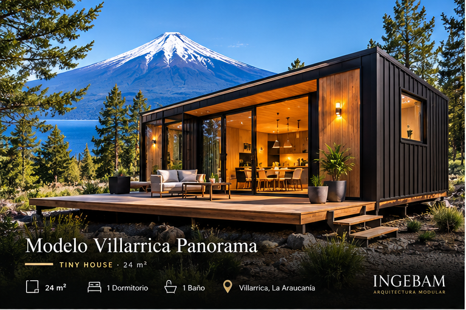

Diseño de referencia
Villarrica Panorama
Diseño contemporáneo con ventanales amplios y conexión visual con el entorno. Configuración por definir según el proyecto.
Espacios diseñados para vivir, emprender o trabajar. Explora los modelos de referencia y conversemos sobre la distribución, las terminaciones y las condiciones de instalación de tu proyecto.
¿Quieres remodelar un inmueble existente? Conoce habilitación comercial.

Diseño de referenciaExplora modelos de referencia para proyectos habitacionales y turísticos en La Araucanía. El diseño definitivo, la superficie útil y las terminaciones se definen antes de presupuestar.
Diseño contemporáneo con ventanales amplios y conexión visual con el entorno. Configuración por definir según el proyecto.
 Diseño de referencia
Diseño de referenciaRefugio de expresión modular pensado para entornos naturales. El equipamiento y las dimensiones se ajustan en la etapa de diseño.
Trabajamos con los formatos exteriores definidos para el desarrollo de los módulos. Las alternativas de distribución interior y terminaciones dependen de cada proyecto.
Largo 6,00 m · ancho 2,60 m · altura máxima 2,80 m.
Superficie exterior de planta: 15,6 m².
Largo 12,00 m · ancho 2,60 m · altura máxima 2,80 m.
Superficie exterior de planta: 31,2 m².
Estas medidas corresponden a formatos dimensionales, no asignan automáticamente una superficie concreta a las fotografías del catálogo. Los modelos 3D son conceptuales hasta su validación técnica.
Tiny Houses y refugios para uso habitacional o turístico, sujetos a requerimientos técnicos y permisos aplicables.
Espacios de trabajo con distribución y equipamiento acordes al uso previsto.
Configuraciones sanitarias modulares evaluadas según instalaciones y factibilidad.
Una construcción modular requiere algo más que elegir un modelo. Para definir una propuesta útil, es importante revisar el uso previsto, la ubicación del terreno, sus accesos y las instalaciones que necesita el espacio.
Comuna o sector, caminos de ingreso, espacio de maniobra y condiciones para transporte e instalación.
Cantidad de ambientes, puertas, ventanas, baño, cocina y necesidades de electricidad o agua, cuando corresponda.
Materialidades, revestimientos, aislación y trabajos complementarios que deban quedar incluidos en la propuesta.
Revisión de condiciones técnicas y normativa aplicable según terreno, destino del inmueble y tipo de obra.
Puedes consultar por proyectos en Temuco, Villarrica, Pucón y otras comunas de La Araucanía. La cobertura y factibilidad de ejecución deben confirmarse para cada ubicación.
Los formatos exteriores de referencia son de 6,00 o 12,00 metros de largo, 2,60 metros de ancho y hasta 2,80 metros de alto. La configuración final se valida técnicamente.
Podemos evaluar la ubicación de ventanas, puertas, distribución interior y terminaciones según el uso y las condiciones del proyecto.
Influyen las dimensiones, distribución, terminaciones, equipamiento, especialidades, traslado, instalación y condiciones del terreno. Por eso cada propuesta requiere antecedentes del proyecto.
El traslado, las condiciones de acceso y la instalación se definen en cada propuesta luego de conocer el terreno y la ubicación.
Indícanos uso, ubicación y dimensiones aproximadas. Prepararemos los antecedentes para evaluar una propuesta personalizada.